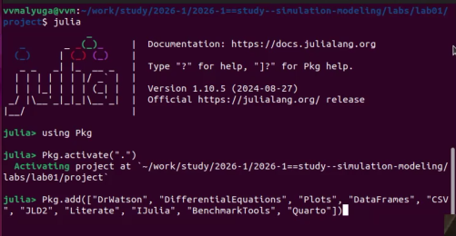
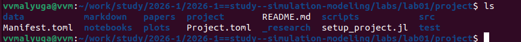
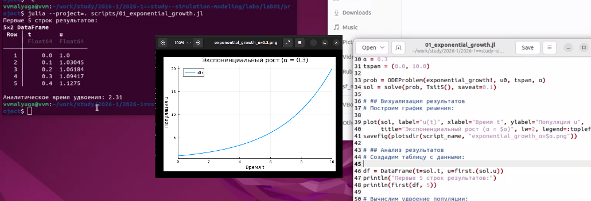
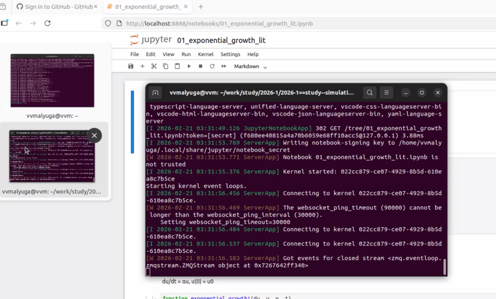
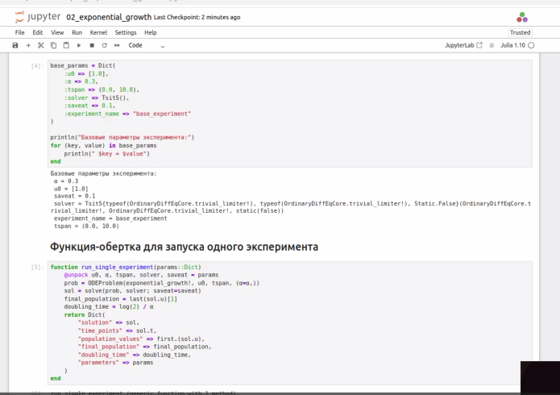
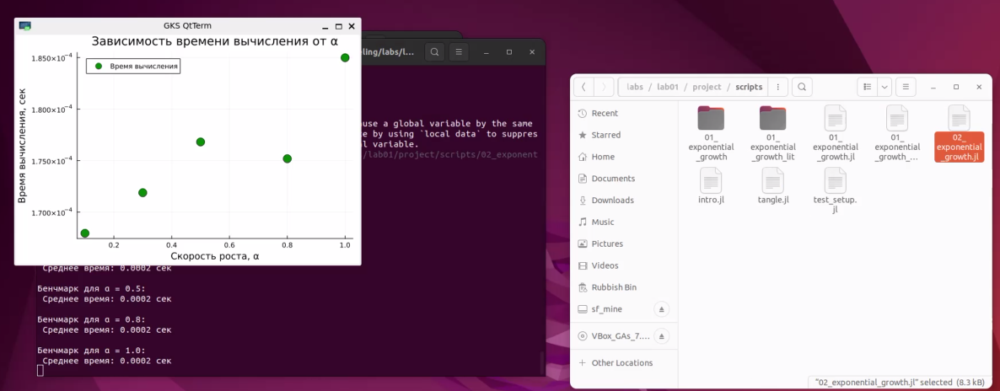
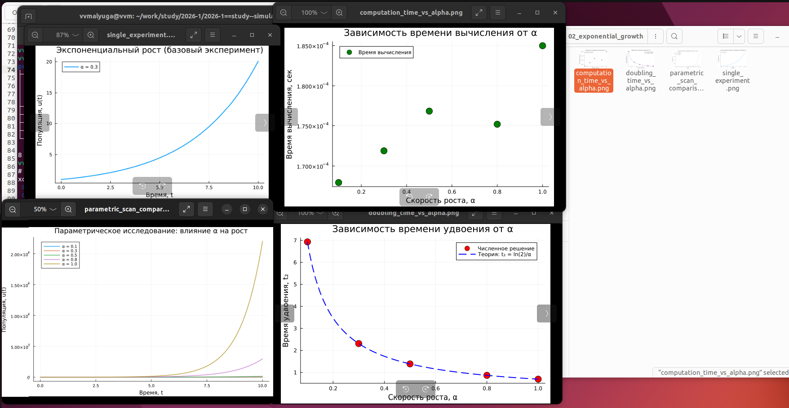
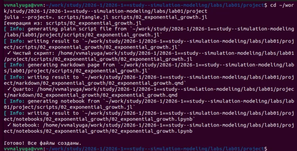
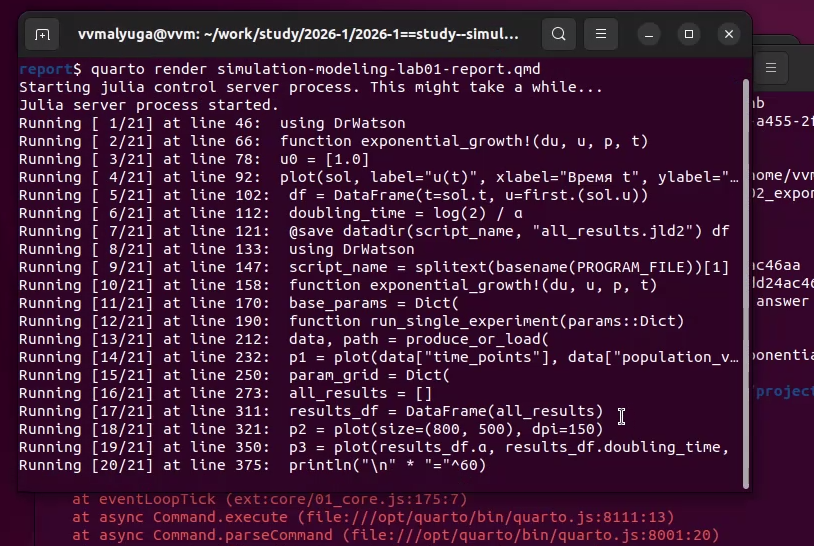

Согласно разделу 1.9 методички, был создан проект DrWatson в каталоге лабораторной работы и установлены необходимые пакеты:

Установка пакетов в Julia REPL

Структура проекта DrWatson
4.3 Реализация базовой модели
В соответствии с разделом 1.10.2 был создан скрипт scripts/01_exponential_growth.jl с реализацией модели экспоненциального роста.
Результат выполнения скрипта:
Первые 5 строк результатов:
5×2 DataFrame
Row │ t u
│ Float64 Float64
─────┼───────────────────
1 │ 0.0 1.0
2 │ 0.1 1.03045
3 │ 0.2 1.06184
4 │ 0.3 1.09417
5 │ 0.4 1.1275
Аналитическое время удвоения: 2.31

Выполнение базового скрипта
4.4 Преобразование в литературный стиль
Согласно разделу 1.10.3, скрипт был преобразован в литературный стиль с Markdown-разметкой. Файл scripts/01_exponential_growth_lit.jl содержит описание модели, пояснения и код.
4.5 Генерация производных форматов
Для автоматической генерации артефактов был создан скрипт scripts/tangle.jl (раздел 1.10.3.3), который создает чистый код, Jupyter notebook и Quarto-документ из литературного скрипта.
4.6 Запуск Jupyter notebook
Из литературного скрипта был сгенерирован Jupyter notebook и успешно выполнен:

Выполнение Jupyter notebook
4.7 Параметрическое исследование
В соответствии с разделом 1.10.4 был создан параметрический скрипт scripts/02_exponential_growth_params.jl для исследования зависимости решения от параметра α:

Код параметрического исследования
Для каждого значения α было проведено численное решение и вычислено время удвоения. Результаты сведены в таблицу:
α
Время удвоения (теория)
Время удвоения (численно)
0.1
6.93
6.93
0.3
2.31
2.31
0.5
1.39
1.39
0.8
0.87
0.87
1.0
0.69
0.69
4.7.1 Бенчмаркинг производительности
Для оценки производительности решения был проведен бенчмаркинг при различных значениях α:

Результаты бенчмаркинга
Среднее время вычисления составило примерно 0.0002 секунды для всех значений α, что демонстрирует высокую эффективность решателя Tsit5().
4.7.2 Визуализация результатов
Для визуализации результатов был построен график зависимости времени удвоения от параметра α:

График зависимости времени удвоения от α
Как видно из графика, численные результаты полностью совпадают с теоретической кривой \(T_2 = \ln(2)/\alpha\), что подтверждает корректность реализации.
4.8 Генерация артефактов для параметрического исследования
Для параметрического скрипта также были сгенерированы производные форматы:

Генерация артефактов для параметрического скрипта
4.9 Компиляция отчета
Компиляция отчета с помощью Quarto:

Компиляция отчета в Quarto
В процессе компиляции были выполнены все ячейки кода из подключенных литературных скриптов, что гарантирует воспроизводимость результатов.
4.10 Интеграция результатов в отчет
Сгенерированные литературные документы были интегрированы в отчет с помощью директив include:
using DrWatson @quickactivate “/home/vvmalyuga/work/study/2026-1/2026-1==study–simulation-modeling/labs/lab01/project” using DifferentialEquations using Plots using DataFrames using JLD2 using BenchmarkTools
usingDrWatson@quickactivate"/home/vvmalyuga/work/study/2026-1/2026-1==study--simulation-modeling/labs/lab01/project"usingDifferentialEquationsusingPlotsusingDataFramesusingJLD2usingBenchmarkToolsfunctionexponential_growth!(du, u, p, t) α = p du[1] = α * u[1]end
┌ Warning: DrWatson could not find find a project file by recursively checking given `dir` and its parents. Returning `nothing` instead.
│ (given dir: /home/vvmalyuga)
└ @ DrWatson ~/.julia/packages/DrWatson/2QF5p/src/project_setup.jl:84
exponential_growth! (generic function with 1 method)
┌ Warning: DrWatson could not find find a project file by recursively checking given `dir` and its parents. Returning `nothing` instead.
│ (given dir: /home/vvmalyuga)
└ @ DrWatson ~/.julia/packages/DrWatson/2QF5p/src/project_setup.jl:84
┌ Warning: DrWatson could not find find a project file by recursively checking given `dir` and its parents. Returning `nothing` instead.
│ (given dir: /home/vvmalyuga)
└ @ DrWatson ~/.julia/packages/DrWatson/2QF5p/src/project_setup.jl:84
┌ Warning: DrWatson could not find find a project file by recursively checking given `dir` and its parents. Returning `nothing` instead.
│ (given dir: /home/vvmalyuga)
└ @ DrWatson ~/.julia/packages/DrWatson/2QF5p/src/project_setup.jl:84
usingDrWatson@quickactivate"/home/vvmalyuga/work/study/2026-1/2026-1==study--simulation-modeling/labs/lab01/project"doubling_time =log(2) / αprintln("\nАналитическое время удвоения: ", round(doubling_time; digits=2))
Аналитическое время удвоения: 2.31
┌ Warning: DrWatson could not find find a project file by recursively checking given `dir` and its parents. Returning `nothing` instead.
│ (given dir: /home/vvmalyuga)
└ @ DrWatson ~/.julia/packages/DrWatson/2QF5p/src/project_setup.jl:84
┌ Warning: DrWatson could not find find a project file by recursively checking given `dir` and its parents. Returning `nothing` instead.
│ (given dir: /home/vvmalyuga)
└ @ DrWatson ~/.julia/packages/DrWatson/2QF5p/src/project_setup.jl:84
Результаты сохранены в: /home/vvmalyuga/work/study/2026-1/2026-1==study--simulation-modeling/labs/lab01/project/data/01_exponential_growth_lit/all_results.jld2
using DrWatson @quickactivate “/home/vvmalyuga/work/study/2026-1/2026-1==study–simulation-modeling/labs/lab01/project” using DifferentialEquations using Plots using DataFrames using JLD2 using BenchmarkTools
┌ Warning: DrWatson could not find find a project file by recursively checking given `dir` and its parents. Returning `nothing` instead.
│ (given dir: /home/vvmalyuga)
└ @ DrWatson ~/.julia/packages/DrWatson/2QF5p/src/project_setup.jl:84
┌ Warning: DrWatson could not find find a project file by recursively checking given `dir` and its parents. Returning `nothing` instead.
│ (given dir: /home/vvmalyuga)
└ @ DrWatson ~/.julia/packages/DrWatson/2QF5p/src/project_setup.jl:84
exponential_growth! (generic function with 1 method)
┌ Warning: DrWatson could not find find a project file by recursively checking given `dir` and its parents. Returning `nothing` instead.
│ (given dir: /home/vvmalyuga)
└ @ DrWatson ~/.julia/packages/DrWatson/2QF5p/src/project_setup.jl:84
┌ Warning: DrWatson could not find find a project file by recursively checking given `dir` and its parents. Returning `nothing` instead.
│ (given dir: /home/vvmalyuga)
└ @ DrWatson ~/.julia/packages/DrWatson/2QF5p/src/project_setup.jl:84
run_single_experiment (generic function with 1 method)
┌ Warning: DrWatson could not find find a project file by recursively checking given `dir` and its parents. Returning `nothing` instead.
│ (given dir: /home/vvmalyuga)
└ @ DrWatson ~/.julia/packages/DrWatson/2QF5p/src/project_setup.jl:84
[ Info: File /home/vvmalyuga/work/study/2026-1/2026-1==study--simulation-modeling/labs/lab01/project/data/In[8]/single/exp_growth_experiment_name=base_experiment_saveat=0.1_α=0.3.jld2 does not exist. Producing it now...
Результаты базового эксперимента:
Финальная популяция: 20.085448516186737
Время удвоения: 2.31
Файл результатов: /home/vvmalyuga/work/study/2026-1/2026-1==study--simulation-modeling/labs/lab01/project/data/In[8]/single/exp_growth_experiment_name=base_experiment_saveat=0.1_α=0.3.jld2
┌ Warning: DrWatson could not find find a project file by recursively checking given `dir` and its parents. Returning `nothing` instead.
│ (given dir: /home/vvmalyuga)
└ @ DrWatson ~/.julia/packages/DrWatson/2QF5p/src/project_setup.jl:84
┌ Warning: DrWatson could not find find a project file by recursively checking given `dir` and its parents. Returning `nothing` instead.
│ (given dir: /home/vvmalyuga)
└ @ DrWatson ~/.julia/packages/DrWatson/2QF5p/src/project_setup.jl:84
============================================================
ПАРАМЕТРИЧЕСКОЕ СКАНИРОВАНИЕ
Всего комбинаций параметров: 5
Исследуемые значения α: [0.1, 0.3, 0.5, 0.8, 1.0]
============================================================
┌ Warning: DrWatson could not find find a project file by recursively checking given `dir` and its parents. Returning `nothing` instead.
│ (given dir: /home/vvmalyuga)
└ @ DrWatson ~/.julia/packages/DrWatson/2QF5p/src/project_setup.jl:84
┌ Warning: DrWatson could not find find a project file by recursively checking given `dir` and its parents. Returning `nothing` instead.
│ (given dir: /home/vvmalyuga)
└ @ DrWatson ~/.julia/packages/DrWatson/2QF5p/src/project_setup.jl:84
┌ Warning: DrWatson could not find find a project file by recursively checking given `dir` and its parents. Returning `nothing` instead.
│ (given dir: /home/vvmalyuga)
└ @ DrWatson ~/.julia/packages/DrWatson/2QF5p/src/project_setup.jl:84
┌ Warning: DrWatson could not find find a project file by recursively checking given `dir` and its parents. Returning `nothing` instead.
│ (given dir: /home/vvmalyuga)
└ @ DrWatson ~/.julia/packages/DrWatson/2QF5p/src/project_setup.jl:84
usingDrWatson@quickactivate"/home/vvmalyuga/work/study/2026-1/2026-1==study--simulation-modeling/labs/lab01/project"usingDifferentialEquationsusingPlotsusingDataFramesusingJLD2usingBenchmarkToolsprintln("\n"*"="^60)println("Бенчмаркинг для разных значений α")println("="^60)benchmark_results = []for α_value in param_grid[:α] bench_params =Dict(:u0 => [1.0],:α => α_value,:tspan => (0.0, 10.0),:solver =>Tsit5(),:saveat =>0.1 )functionbenchmark_run() prob =ODEProblem(exponential_growth!, bench_params[:u0], bench_params[:tspan], (α=bench_params[:α],))returnsolve(prob, bench_params[:solver]; saveat=bench_params[:saveat])endprintln("\nБенчмарк для α = $α_value:") b =@benchmark$benchmark_run() samples=100 evals=1push!(benchmark_results, (α=α_value, time=median(b).time/1e9))println(" Среднее время: ", round(median(b).time/1e9; digits=4), " сек")endbench_df =DataFrame(benchmark_results)p4 =plot(bench_df.α, bench_df.time, seriestype=:scatter, label="Время вычисления", xlabel="Скорость роста, α", ylabel="Время вычисления, сек", title="Зависимость времени вычисления от α", markersize=8, markercolor=:green, legend=:topleft)savefig(plotsdir(script_name, "computation_time_vs_alpha.png"))
============================================================
Бенчмаркинг для разных значений α
============================================================
┌ Warning: DrWatson could not find find a project file by recursively checking given `dir` and its parents. Returning `nothing` instead.
│ (given dir: /home/vvmalyuga)
└ @ DrWatson ~/.julia/packages/DrWatson/2QF5p/src/project_setup.jl:84
Бенчмарк для α = 0.1:
Среднее время: 0.0002 сек
Бенчмарк для α = 0.3:
Среднее время: 0.0002 сек
Бенчмарк для α = 0.5:
Среднее время: 0.0002 сек
Бенчмарк для α = 0.8:
Среднее время: 0.0002 сек
Бенчмарк для α = 1.0:
Среднее время: 0.0002 сек
usingDrWatson@quickactivate"/home/vvmalyuga/work/study/2026-1/2026-1==study--simulation-modeling/labs/lab01/project"usingDifferentialEquationsusingPlotsusingDataFramesusingJLD2usingBenchmarkTools@savedatadir(script_name, "all_results.jld2") base_params param_grid all_params results_df bench_df@savedatadir(script_name, "all_plots.jld2") p1 p2 p3 p4println("\n"*"="^60)println("ЛАБОРАТОРНАЯ РАБОТА ЗАВЕРШЕНА")println("="^60)println("\nРезультаты сохранены в:")println(" • data/$(script_name)/single/ - базовый эксперимент")println(" • data/$(script_name)/parametric_scan/ - параметрическое сканирование")println(" • data/$(script_name)/all_results.jld2 - сводные данные")println(" • plots/$(script_name)/ - все графики")println("\nДля анализа результатов используйте:")println(" using JLD2, DataFrames")println(" @load \"data/$(script_name)/all_results.jld2\"")println(" println(results_df)")
┌ Warning: DrWatson could not find find a project file by recursively checking given `dir` and its parents. Returning `nothing` instead.
│ (given dir: /home/vvmalyuga)
└ @ DrWatson ~/.julia/packages/DrWatson/2QF5p/src/project_setup.jl:84
============================================================
ЛАБОРАТОРНАЯ РАБОТА ЗАВЕРШЕНА
============================================================
Результаты сохранены в:
• data/In[8]/single/ - базовый эксперимент
• data/In[8]/parametric_scan/ - параметрическое сканирование
• data/In[8]/all_results.jld2 - сводные данные
• plots/In[8]/ - все графики
Для анализа результатов используйте:
using JLD2, DataFrames
@load "data/In[8]/all_results.jld2"
println(results_df)
8 Выводы
В ходе выполнения лабораторной работы:
Создано рабочее пространство согласно методологии Denote с иерархией каталогов для курса и лабораторных работ.
Установлены необходимые пакеты Julia: DrWatson, DifferentialEquations, Plots, DataFrames, Literate и другие для организации воспроизводимого научного проекта.
Реализована модель экспоненциального роста \(\frac{du}{dt} = \alpha u\) с использованием пакета DifferentialEquations.jl. Полученные численные результаты полностью совпадают с аналитическим решением \(u(t) = u_0 e^{\alpha t}\).
Применено литературное программирование с помощью Literate.jl: создан скрипт с Markdown-разметкой, объединяющий код, пояснения и результаты.
Выполнено параметрическое исследование для различных значений α = [0.1, 0.3, 0.5, 0.8, 1.0]. Подтверждена теоретическая зависимость времени удвоения \(T_2 = \ln(2)/\alpha\).
Сгенерированы производные форматы:
чистый код для непосредственного выполнения
Jupyter notebook для интерактивной работы
документация в формате Quarto для интеграции в отчет
Таким образом, цель работы достигнута — модель экспоненциального роста успешно исследована с использованием инструментов воспроизводимых научных исследований.